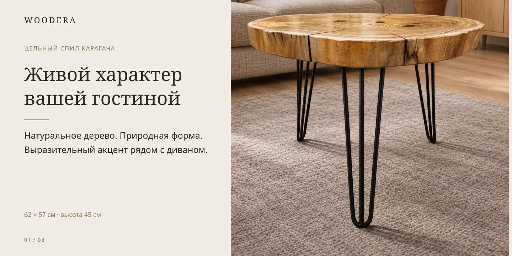
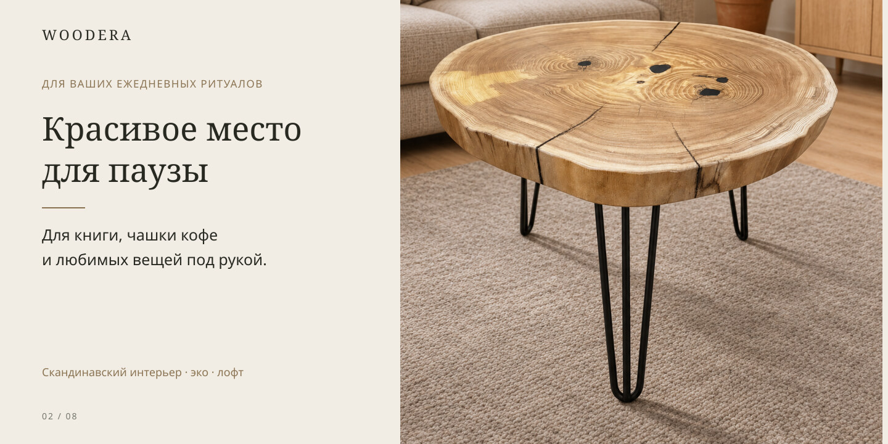
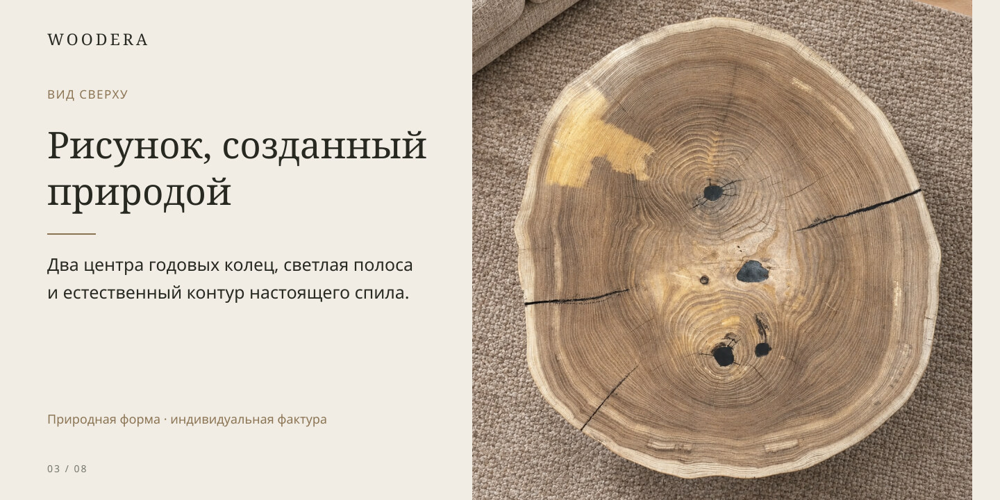
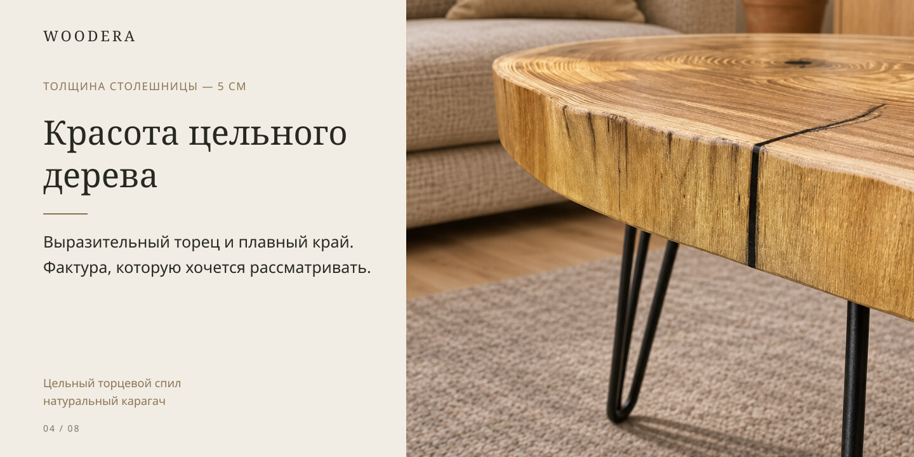
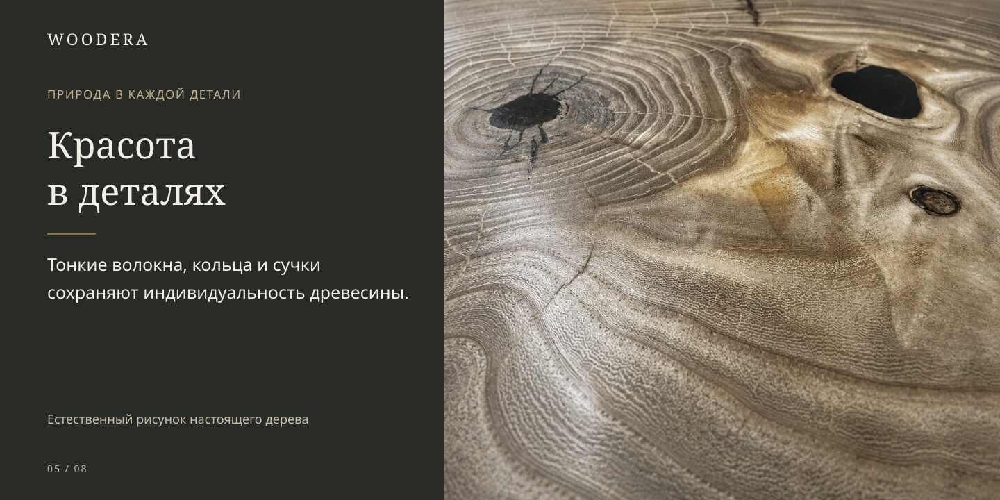
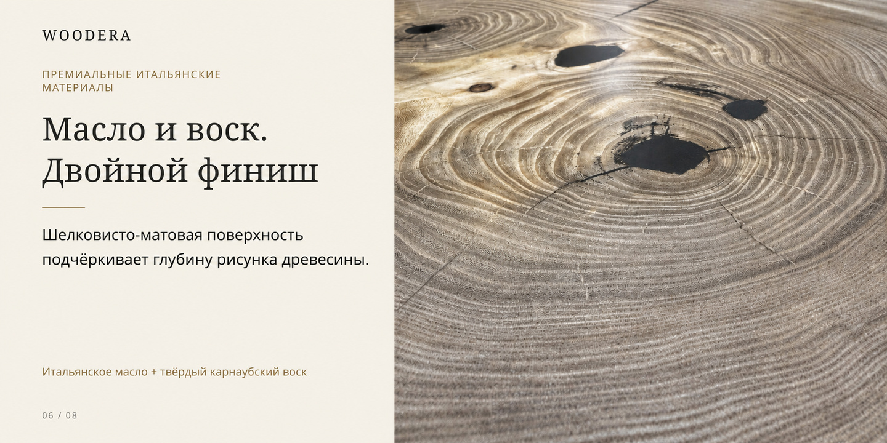
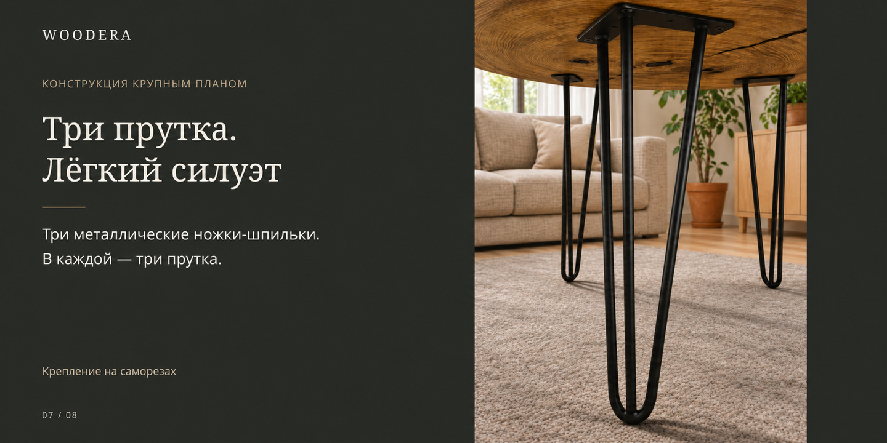
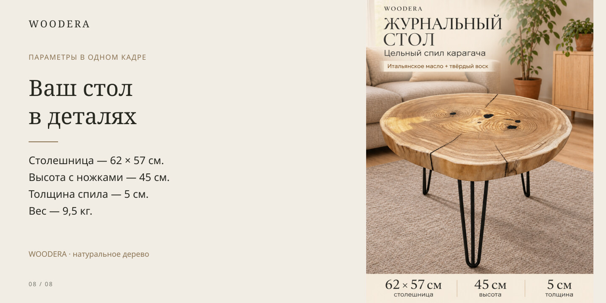

Живой характер вашей гостиной
Журнальный стол WOODERA из цельного торцевого спила карагача — выразительный акцент для гостиной. Тёплая древесина, природный контур и чёрные металлические ножки создают лаконичное сочетание материалов.
Карагач · 62 × 57 см · высота 45 см
Рич-контент: мобильная и компьютерная версии

Журнальный стол WOODERA из цельного торцевого спила карагача — выразительный акцент для гостиной. Тёплая древесина, природный контур и чёрные металлические ножки создают лаконичное сочетание материалов.

Рядом с диваном или креслом — для книги, чашки кофе на подставке и любимых вещей под рукой. Естественные оттенки карагача дополнят современный, скандинавский или лофт-интерьер.

Переплетение годовых колец, светлые участки древесины и природные линии создают неповторимый рисунок этого спила. Размер столешницы по крайним точкам — 62 × 57 см; её контур сохраняет естественную форму дерева.

Столешница толщиной 5 см выполнена из цельного торцевого спила карагача. Светлый край обрамляет более насыщенную сердцевину, раскрывая рисунок дерева по всей поверхности.

Тонкие линии годовых колец, фактура волокон и плавные переходы оттенков хочется рассматривать вблизи. Само дерево становится главным украшением стола.

Для отделки используются премиальные итальянские материалы: масло и твёрдый карнаубский воск. Масло подчёркивает глубину цвета и рисунок карагача. Нанесённый поверх него воск служит завершающим защитным слоем.

Три чёрные металлические ножки-шпильки, по три прутка в каждой, придают конструкции визуальную лёгкость. Монтажные пластины ножек закреплены с нижней стороны столешницы на саморезах. Общая высота стола — 45 см.

Столешница — 62 × 57 см. Толщина спила — 5 см. Высота с ножками — 45 см. Вес стола — 9,5 кг. Используйте подставки под горячую посуду и напитки. Пролитую жидкость сразу удаляйте мягкой салфеткой, после влажной уборки вытирайте поверхность насухо.